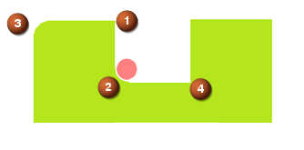

Contour Profile start points for closed pockets
What is it?
You can now use the Region Start Points options in Non Cutting Moves to control the start point for closed pockets. These options control multiple closed pockets, but do not affect open pockets.
The default setting for the Default Region Start option is set to one of the following:
-
Mid Point
-
Corner
Mid Point start point
The Mid Point setting starts the tool path for each closed pocket at the mid point of the longest wall segment. This option provides the same results as in previous releases.
Corner start point
The Corner setting starts the tool path for each closed pocket at one of the following locations, listed in order of priority.
-
A sharp convex corner.
-
The midpoint of a concave corner if the tool fits into the curvature.
-
The midpoint of a convex rounded corner.
-
A sharp concave corner or fillet where the tool does not fit.

Select Points start point
The Select Points options let you manually specify a start point location if none of the Midpoint or Corner option locations are acceptable. NX starts the tool path at the closest safe location to the manually specified start point.
If you manually specify region start points, they take precedence over the Default Region Start point. Use the Effective Distance option to limit the influence of the manually specified points.
Where do I find it?
|
Application |
Manufacturing |
|
Prerequisite |
Contour Profile operation |
|
Location in dialog box |
Contour Profile operation dialog box→Path Settings group→Non Cutting Moves |